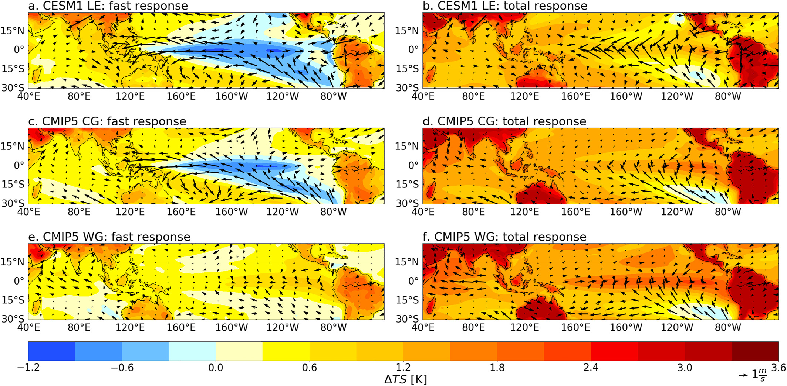
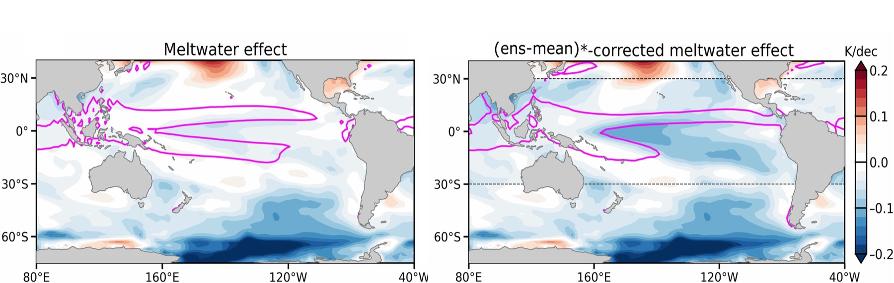

Tropical Climate Dynamics Across Scales
The tropics receive more solar energy than any other part of Earth and play a central role in moving heat and moisture around the planet. Tropical ocean temperatures, rainfall, clouds, and large-scale wind patterns constantly interact with one another. These features vary naturally through events such as El Niño and La Niña, while also changing over longer periods as the planet warms.
Even relatively small changes in the tropical oceans or atmosphere can shift major circulation systems, including the Walker circulation, and send signals to distant regions through atmospheric and oceanic connections. As a result, tropical climate changes can influence monsoons, storm tracks, droughts, floods, heat waves, and other extremes around the world. Understanding these processes, and how they depend on the tropical climate background, is essential for explaining global climate connections and improving climate predictions across timescales.
Mechanisms of Walker circulation changes to increasing CO2

The Walker circulation (WC) is a large-scale tropical airflow in the zonal and vertical directions that emerges from atmosphere-ocean interaction. A strong WC is associated with more positive air-sea coupling: westward trade winds pile warm water in the western Pacific and upwell cold water in the eastern Pacific, strengthening the zonal SST gradient and atmospheric convection over warm regions. The resulting SST and sea level pressure gradients further reinforce the trade winds.
We use multiple climate models to study WC responses to increasing CO2 across different timescales. Two distinct responses emerge, and their differences are determined by the simulated strength of air-sea coupling. In one class of models, strong air-sea coupling causes the WC to strengthen immediately after forcing, opposite to the long-term response. In another class, the WC weakens from the beginning of the simulation. These results suggest that inter-model discrepancies in the WC response to CO2 are closely linked to uncertainty in the fast-response component.
SO teleconnections and tropical mean-state bias

Recent observations show broad cooling trends in both the Southern Ocean (SO) and the tropical eastern Pacific. This pattern can influence rainfall, drought, and extreme weather, yet climate models often struggle to reproduce it, making its causes and future evolution uncertain.
One possible explanation is that SO cooling, caused for example by increasing Antarctic meltwater, can influence tropical climate through connected changes in winds, evaporation, clouds, and ocean circulation. These processes may help cool the eastern tropical Pacific, but models disagree widely on the strength of this connection, especially near the equator, where temperature changes have the largest global impacts.
Our research shows that this disagreement partly arises from biases in models' mean-state intertropical convergence zone (ITCZ). Models with a more realistic ITCZ simulate a stronger tropical SST response to SO forcing through a stronger wind-evaporation-SST feedback. This suggests that the SO may have contributed more to recent tropical Pacific cooling, and broader global climate change, than many models indicate.